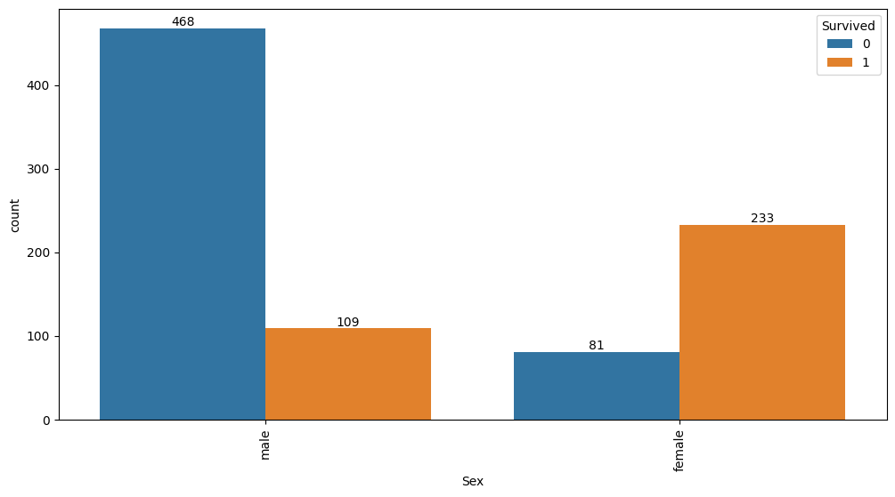
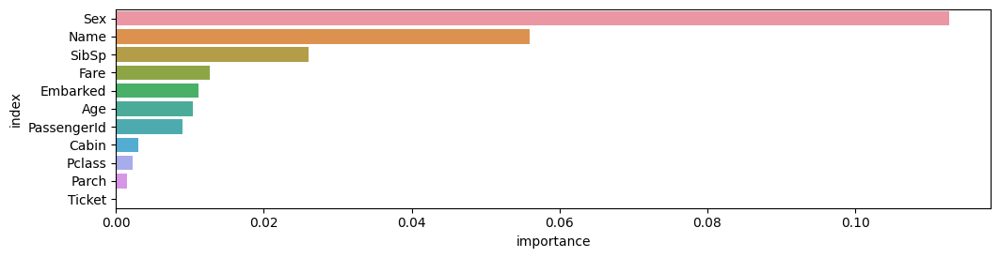
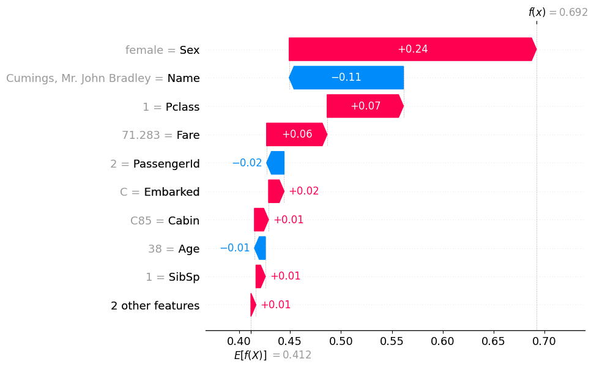

#!pip install autogluon.eda13wk-56: 타이타닉 / 자료분석(Autogluon)
1. 강의영상
2. Imports
import numpy as np
import pandas as pd
import matplotlib.pyplot as plt
import seaborn as sns
#---#
from autogluon.tabular import TabularPredictor
import autogluon.eda.auto as auto
#---#
import warnings
warnings.filterwarnings('ignore')3. Data
!kaggle competitions download -c titanic2023-12-01 21:25:57,259 WARNING Retrying (Retry(total=2, connect=None, read=None, redirect=None, status=None)) after connection broken by 'NewConnectionError('<urllib3.connection.HTTPSConnection object at 0x7f0fa4f850f0>: Failed to establish a new connection: [Errno -3] Temporary failure in name resolution')': /api/v1/competitions/data/download-all/titanic
Downloading titanic.zip to /home/cgb2/Dropbox/07_lectures/2023-09-MP2023/posts
0%| | 0.00/34.1k [00:00<?, ?B/s]
100%|███████████████████████████████████████| 34.1k/34.1k [00:00<00:00, 752kB/s]!unzip titanic.zipArchive: titanic.zip
inflating: gender_submission.csv
inflating: test.csv
inflating: train.csv df_train = pd.read_csv('train.csv')!rm gender_submission.csv
!rm test.csv
!rm train.csv
!rm titanic.zip4. 적합
df_train.head()| PassengerId | Survived | Pclass | Name | Sex | Age | SibSp | Parch | Ticket | Fare | Cabin | Embarked | |
|---|---|---|---|---|---|---|---|---|---|---|---|---|
| 0 | 1 | 0 | 3 | Braund, Mr. Owen Harris | male | 22.0 | 1 | 0 | A/5 21171 | 7.2500 | NaN | S |
| 1 | 2 | 1 | 1 | Cumings, Mrs. John Bradley (Florence Briggs Th... | female | 38.0 | 1 | 0 | PC 17599 | 71.2833 | C85 | C |
| 2 | 3 | 1 | 3 | Heikkinen, Miss. Laina | female | 26.0 | 0 | 0 | STON/O2. 3101282 | 7.9250 | NaN | S |
| 3 | 4 | 1 | 1 | Futrelle, Mrs. Jacques Heath (Lily May Peel) | female | 35.0 | 1 | 0 | 113803 | 53.1000 | C123 | S |
| 4 | 5 | 0 | 3 | Allen, Mr. William Henry | male | 35.0 | 0 | 0 | 373450 | 8.0500 | NaN | S |
# step1 -- pass
# step2
predictr = TabularPredictor(label = 'Survived')
# step3
predictr.fit(df_train,num_gpus=1)
# step4
yhat = predictr.predict(df_train)No path specified. Models will be saved in: "AutogluonModels/ag-20231201_122610/"
Beginning AutoGluon training ...
AutoGluon will save models to "AutogluonModels/ag-20231201_122610/"
AutoGluon Version: 0.8.2
Python Version: 3.10.13
Operating System: Linux
Platform Machine: x86_64
Platform Version: #26~22.04.1-Ubuntu SMP PREEMPT_DYNAMIC Thu Jul 13 16:27:29 UTC 2
Disk Space Avail: 248.16 GB / 490.57 GB (50.6%)
Train Data Rows: 891
Train Data Columns: 11
Label Column: Survived
Preprocessing data ...
AutoGluon infers your prediction problem is: 'binary' (because only two unique label-values observed).
2 unique label values: [0, 1]
If 'binary' is not the correct problem_type, please manually specify the problem_type parameter during predictor init (You may specify problem_type as one of: ['binary', 'multiclass', 'regression'])
Selected class <--> label mapping: class 1 = 1, class 0 = 0
Using Feature Generators to preprocess the data ...
Fitting AutoMLPipelineFeatureGenerator...
Available Memory: 124427.03 MB
Train Data (Original) Memory Usage: 0.31 MB (0.0% of available memory)
Inferring data type of each feature based on column values. Set feature_metadata_in to manually specify special dtypes of the features.
Stage 1 Generators:
Fitting AsTypeFeatureGenerator...
Note: Converting 1 features to boolean dtype as they only contain 2 unique values.
Stage 2 Generators:
Fitting FillNaFeatureGenerator...
Stage 3 Generators:
Fitting IdentityFeatureGenerator...
Fitting CategoryFeatureGenerator...
Fitting CategoryMemoryMinimizeFeatureGenerator...
Fitting TextSpecialFeatureGenerator...
Fitting BinnedFeatureGenerator...
Fitting DropDuplicatesFeatureGenerator...
Fitting TextNgramFeatureGenerator...
Fitting CountVectorizer for text features: ['Name']
CountVectorizer fit with vocabulary size = 8
Stage 4 Generators:
Fitting DropUniqueFeatureGenerator...
Stage 5 Generators:
Fitting DropDuplicatesFeatureGenerator...
Types of features in original data (raw dtype, special dtypes):
('float', []) : 2 | ['Age', 'Fare']
('int', []) : 4 | ['PassengerId', 'Pclass', 'SibSp', 'Parch']
('object', []) : 4 | ['Sex', 'Ticket', 'Cabin', 'Embarked']
('object', ['text']) : 1 | ['Name']
Types of features in processed data (raw dtype, special dtypes):
('category', []) : 3 | ['Ticket', 'Cabin', 'Embarked']
('float', []) : 2 | ['Age', 'Fare']
('int', []) : 4 | ['PassengerId', 'Pclass', 'SibSp', 'Parch']
('int', ['binned', 'text_special']) : 9 | ['Name.char_count', 'Name.word_count', 'Name.capital_ratio', 'Name.lower_ratio', 'Name.special_ratio', ...]
('int', ['bool']) : 1 | ['Sex']
('int', ['text_ngram']) : 9 | ['__nlp__.henry', '__nlp__.john', '__nlp__.master', '__nlp__.miss', '__nlp__.mr', ...]
0.2s = Fit runtime
11 features in original data used to generate 28 features in processed data.
Train Data (Processed) Memory Usage: 0.07 MB (0.0% of available memory)
Data preprocessing and feature engineering runtime = 0.19s ...
AutoGluon will gauge predictive performance using evaluation metric: 'accuracy'
To change this, specify the eval_metric parameter of Predictor()
Automatically generating train/validation split with holdout_frac=0.2, Train Rows: 712, Val Rows: 179
User-specified model hyperparameters to be fit:
{
'NN_TORCH': {},
'GBM': [{'extra_trees': True, 'ag_args': {'name_suffix': 'XT'}}, {}, 'GBMLarge'],
'CAT': {},
'XGB': {},
'FASTAI': {},
'RF': [{'criterion': 'gini', 'ag_args': {'name_suffix': 'Gini', 'problem_types': ['binary', 'multiclass']}}, {'criterion': 'entropy', 'ag_args': {'name_suffix': 'Entr', 'problem_types': ['binary', 'multiclass']}}, {'criterion': 'squared_error', 'ag_args': {'name_suffix': 'MSE', 'problem_types': ['regression', 'quantile']}}],
'XT': [{'criterion': 'gini', 'ag_args': {'name_suffix': 'Gini', 'problem_types': ['binary', 'multiclass']}}, {'criterion': 'entropy', 'ag_args': {'name_suffix': 'Entr', 'problem_types': ['binary', 'multiclass']}}, {'criterion': 'squared_error', 'ag_args': {'name_suffix': 'MSE', 'problem_types': ['regression', 'quantile']}}],
'KNN': [{'weights': 'uniform', 'ag_args': {'name_suffix': 'Unif'}}, {'weights': 'distance', 'ag_args': {'name_suffix': 'Dist'}}],
}
Fitting 13 L1 models ...
Fitting model: KNeighborsUnif ...
0.6536 = Validation score (accuracy)
0.01s = Training runtime
0.09s = Validation runtime
Fitting model: KNeighborsDist ...
0.6536 = Validation score (accuracy)
0.01s = Training runtime
0.0s = Validation runtime
Fitting model: LightGBMXT ...
Training LightGBMXT with GPU, note that this may negatively impact model quality compared to CPU training.
[LightGBM] [Fatal] GPU Tree Learner was not enabled in this build.
Please recompile with CMake option -DUSE_GPU=1
Warning: GPU mode might not be installed for LightGBM, GPU training raised an exception. Falling back to CPU training...Refer to LightGBM GPU documentation: https://github.com/Microsoft/LightGBM/tree/master/python-package#build-gpu-versionOne possible method is: pip uninstall lightgbm -y pip install lightgbm --install-option=--gpu
0.8156 = Validation score (accuracy)
0.39s = Training runtime
0.0s = Validation runtime
Fitting model: LightGBM ...
Training LightGBM with GPU, note that this may negatively impact model quality compared to CPU training.
[LightGBM] [Fatal] GPU Tree Learner was not enabled in this build.
Please recompile with CMake option -DUSE_GPU=1
Warning: GPU mode might not be installed for LightGBM, GPU training raised an exception. Falling back to CPU training...Refer to LightGBM GPU documentation: https://github.com/Microsoft/LightGBM/tree/master/python-package#build-gpu-versionOne possible method is: pip uninstall lightgbm -y pip install lightgbm --install-option=--gpu
0.8212 = Validation score (accuracy)
0.21s = Training runtime
0.0s = Validation runtime
Fitting model: RandomForestGini ...
0.8156 = Validation score (accuracy)
0.44s = Training runtime
0.04s = Validation runtime
Fitting model: RandomForestEntr ...
0.8156 = Validation score (accuracy)
0.89s = Training runtime
0.08s = Validation runtime
Fitting model: CatBoost ...
Training CatBoost with GPU, note that this may negatively impact model quality compared to CPU training.
Warning: CatBoost on GPU is experimental. If you encounter issues, use CPU for training CatBoost instead.
0.8156 = Validation score (accuracy)
1.79s = Training runtime
0.0s = Validation runtime
Fitting model: ExtraTreesGini ...
0.8156 = Validation score (accuracy)
0.35s = Training runtime
0.04s = Validation runtime
Fitting model: ExtraTreesEntr ...
0.8101 = Validation score (accuracy)
0.35s = Training runtime
0.04s = Validation runtime
Fitting model: NeuralNetFastAI ...
No improvement since epoch 9: early stopping
0.8324 = Validation score (accuracy)
1.07s = Training runtime
0.02s = Validation runtime
Fitting model: XGBoost ...
0.8101 = Validation score (accuracy)
0.65s = Training runtime
0.01s = Validation runtime
Fitting model: NeuralNetTorch ...
0.8212 = Validation score (accuracy)
3.22s = Training runtime
0.01s = Validation runtime
Fitting model: LightGBMLarge ...
Training LightGBMLarge with GPU, note that this may negatively impact model quality compared to CPU training.
[LightGBM] [Fatal] GPU Tree Learner was not enabled in this build.
Please recompile with CMake option -DUSE_GPU=1
Warning: GPU mode might not be installed for LightGBM, GPU training raised an exception. Falling back to CPU training...Refer to LightGBM GPU documentation: https://github.com/Microsoft/LightGBM/tree/master/python-package#build-gpu-versionOne possible method is: pip uninstall lightgbm -y pip install lightgbm --install-option=--gpu
0.8324 = Validation score (accuracy)
0.44s = Training runtime
0.0s = Validation runtime
Fitting model: WeightedEnsemble_L2 ...
0.8324 = Validation score (accuracy)
0.44s = Training runtime
0.0s = Validation runtime
AutoGluon training complete, total runtime = 10.96s ... Best model: "WeightedEnsemble_L2"
TabularPredictor saved. To load, use: predictor = TabularPredictor.load("AutogluonModels/ag-20231201_122610/")5. 해석 및 시각화
A. y의 분포, (X,y)의 관계 시각화
auto.target_analysis(
train_data=df_train,
label='Survived',
fit_distributions=False
)Target variable analysis
| count | mean | std | min | 25% | 50% | 75% | max | dtypes | unique | missing_count | missing_ratio | raw_type | special_types | |
|---|---|---|---|---|---|---|---|---|---|---|---|---|---|---|
| Survived | 891 | 0.383838 | 0.486592 | 0.0 | 0.0 | 0.0 | 1.0 | 1.0 | int64 | 2 | int |

Target variable correlations
train_data - spearman correlation matrix; focus: absolute correlation for Survived >= 0.5

Feature interaction between Sex/Survived in train_data

B. 중요한 설명변수
auto.quick_fit(
train_data=df_train,
label='Survived',
show_feature_importance_barplots=True
)No path specified. Models will be saved in: "AutogluonModels/ag-20231201_122621/"Model Prediction for Survived
Using validation data for Test points

Model Leaderboard
| model | score_test | score_val | pred_time_test | pred_time_val | fit_time | pred_time_test_marginal | pred_time_val_marginal | fit_time_marginal | stack_level | can_infer | fit_order | |
|---|---|---|---|---|---|---|---|---|---|---|---|---|
| 0 | LightGBMXT | 0.809701 | 0.856 | 0.002458 | 0.002815 | 0.160465 | 0.002458 | 0.002815 | 0.160465 | 1 | True | 1 |
Feature Importance for Trained Model
| importance | stddev | p_value | n | p99_high | p99_low | |
|---|---|---|---|---|---|---|
| Sex | 0.112687 | 0.013033 | 0.000021 | 5 | 0.139522 | 0.085851 |
| Name | 0.055970 | 0.009140 | 0.000082 | 5 | 0.074789 | 0.037151 |
| SibSp | 0.026119 | 0.010554 | 0.002605 | 5 | 0.047850 | 0.004389 |
| Fare | 0.012687 | 0.009730 | 0.021720 | 5 | 0.032721 | -0.007348 |
| Embarked | 0.011194 | 0.006981 | 0.011525 | 5 | 0.025567 | -0.003179 |
| Age | 0.010448 | 0.003122 | 0.000853 | 5 | 0.016876 | 0.004020 |
| PassengerId | 0.008955 | 0.005659 | 0.012022 | 5 | 0.020607 | -0.002696 |
| Cabin | 0.002985 | 0.006675 | 0.186950 | 5 | 0.016729 | -0.010758 |
| Pclass | 0.002239 | 0.005659 | 0.213159 | 5 | 0.013890 | -0.009413 |
| Parch | 0.001493 | 0.002044 | 0.088904 | 5 | 0.005701 | -0.002716 |
| Ticket | 0.000000 | 0.000000 | 0.500000 | 5 | 0.000000 | 0.000000 |

Rows with the highest prediction error
Rows in this category worth inspecting for the causes of the error
| PassengerId | Pclass | Name | Sex | Age | SibSp | Parch | Ticket | Fare | Cabin | Embarked | Survived | 0 | 1 | error | |
|---|---|---|---|---|---|---|---|---|---|---|---|---|---|---|---|
| 498 | 499 | 1 | Allison, Mrs. Hudson J C (Bessie Waldo Daniels) | female | 25.0 | 1 | 2 | 113781 | 151.5500 | C22 C26 | S | 0 | 0.046788 | 0.953212 | 0.906424 |
| 267 | 268 | 3 | Persson, Mr. Ernst Ulrik | male | 25.0 | 1 | 0 | 347083 | 7.7750 | NaN | S | 1 | 0.932024 | 0.067976 | 0.864047 |
| 569 | 570 | 3 | Jonsson, Mr. Carl | male | 32.0 | 0 | 0 | 350417 | 7.8542 | NaN | S | 1 | 0.922265 | 0.077735 | 0.844530 |
| 283 | 284 | 3 | Dorking, Mr. Edward Arthur | male | 19.0 | 0 | 0 | A/5. 10482 | 8.0500 | NaN | S | 1 | 0.921180 | 0.078820 | 0.842361 |
| 821 | 822 | 3 | Lulic, Mr. Nikola | male | 27.0 | 0 | 0 | 315098 | 8.6625 | NaN | S | 1 | 0.919709 | 0.080291 | 0.839419 |
| 301 | 302 | 3 | McCoy, Mr. Bernard | male | NaN | 2 | 0 | 367226 | 23.2500 | NaN | Q | 1 | 0.918546 | 0.081454 | 0.837093 |
| 288 | 289 | 2 | Hosono, Mr. Masabumi | male | 42.0 | 0 | 0 | 237798 | 13.0000 | NaN | S | 1 | 0.907043 | 0.092957 | 0.814085 |
| 36 | 37 | 3 | Mamee, Mr. Hanna | male | NaN | 0 | 0 | 2677 | 7.2292 | NaN | C | 1 | 0.906803 | 0.093197 | 0.813605 |
| 127 | 128 | 3 | Madsen, Mr. Fridtjof Arne | male | 24.0 | 0 | 0 | C 17369 | 7.1417 | NaN | S | 1 | 0.906605 | 0.093395 | 0.813210 |
| 391 | 392 | 3 | Jansson, Mr. Carl Olof | male | 21.0 | 0 | 0 | 350034 | 7.7958 | NaN | S | 1 | 0.905367 | 0.094633 | 0.810734 |
Rows with the least distance vs other class
Rows in this category are the closest to the decision boundary vs the other class and are good candidates for additional labeling
| PassengerId | Pclass | Name | Sex | Age | SibSp | Parch | Ticket | Fare | Cabin | Embarked | Survived | 0 | 1 | error | |
|---|---|---|---|---|---|---|---|---|---|---|---|---|---|---|---|
| 347 | 348 | 3 | Davison, Mrs. Thomas Henry (Mary E Finck) | female | NaN | 1 | 0 | 386525 | 16.1000 | NaN | S | 1 | 0.510786 | 0.489214 | 0.021572 |
| 192 | 193 | 3 | Andersen-Jensen, Miss. Carla Christine Nielsine | female | 19.0 | 1 | 0 | 350046 | 7.8542 | NaN | S | 1 | 0.512167 | 0.487833 | 0.024334 |
| 172 | 173 | 3 | Johnson, Miss. Eleanor Ileen | female | 1.0 | 1 | 1 | 347742 | 11.1333 | NaN | S | 1 | 0.526793 | 0.473207 | 0.053585 |
| 328 | 329 | 3 | Goldsmith, Mrs. Frank John (Emily Alice Brown) | female | 31.0 | 1 | 1 | 363291 | 20.5250 | NaN | S | 1 | 0.531574 | 0.468426 | 0.063149 |
| 593 | 594 | 3 | Bourke, Miss. Mary | female | NaN | 0 | 2 | 364848 | 7.7500 | NaN | Q | 0 | 0.463840 | 0.536160 | 0.072319 |
| 376 | 377 | 3 | Landergren, Miss. Aurora Adelia | female | 22.0 | 0 | 0 | C 7077 | 7.2500 | NaN | S | 1 | 0.549471 | 0.450529 | 0.098942 |
| 607 | 608 | 1 | Daniel, Mr. Robert Williams | male | 27.0 | 0 | 0 | 113804 | 30.5000 | NaN | S | 1 | 0.558802 | 0.441198 | 0.117605 |
| 113 | 114 | 3 | Jussila, Miss. Katriina | female | 20.0 | 1 | 0 | 4136 | 9.8250 | NaN | S | 0 | 0.439738 | 0.560262 | 0.120524 |
| 889 | 890 | 1 | Behr, Mr. Karl Howell | male | 26.0 | 0 | 0 | 111369 | 30.0000 | C148 | C | 1 | 0.568476 | 0.431524 | 0.136952 |
| 18 | 19 | 3 | Vander Planke, Mrs. Julius (Emelia Maria Vandemoortele) | female | 31.0 | 1 | 0 | 345763 | 18.0000 | NaN | S | 0 | 0.418177 | 0.581823 | 0.163645 |
C. 관측치별 해석
- 1번관측치
df_train.iloc[[1]]| PassengerId | Survived | Pclass | Name | Sex | Age | SibSp | Parch | Ticket | Fare | Cabin | Embarked | |
|---|---|---|---|---|---|---|---|---|---|---|---|---|
| 1 | 2 | 1 | 1 | Cumings, Mrs. John Bradley (Florence Briggs Thayer) | female | 38.0 | 1 | 0 | PC 17599 | 71.2833 | C85 | C |
predictr.predict(df_train.iloc[[1]])1 1
Name: Survived, dtype: int64predictr.predict_proba(df_train.iloc[[1]])| 0 | 1 | |
|---|---|---|
| 1 | 0.062021 | 0.937979 |
auto.explain_rows(
train_data=df_train,
model=predictr,
rows=df_train.iloc[[1]],
display_rows=True,
plot='waterfall'
)| PassengerId | Survived | Pclass | Name | Sex | Age | SibSp | Parch | Ticket | Fare | Cabin | Embarked | |
|---|---|---|---|---|---|---|---|---|---|---|---|---|
| 1 | 2 | 1 | 1 | Cumings, Mrs. John Bradley (Florence Briggs Thayer) | female | 38.0 | 1 | 0 | PC 17599 | 71.2833 | C85 | C |

- 이름이 중요하다..?
- 이름을 남자처럼 바꿔보자.
Note
“Cumings, Mrs. John Bradley (Florence Briggs Thayer)”라는 이름은 일반적인 형식의 성명이 아닌, 이전 시대에 흔히 사용되던 형식 중 하나입니다. 이러한 형식은 주로 19세기와 20세기 초기에 미국과 다른 서구 국가에서 흔히 사용되었습니다.
이 이름의 구성 요소를 설명하면 다음과 같습니다:
Cumings: 이것은 가족 성입니다. 여성의 경우 결혼 전 성을 나타낼 수 있습니다.
Mrs. John Bradley: 이 부분은 여성의 남편의 이름과 “Mrs.”라는 여성으로서의 결혼 상태를 나타내는 부분입니다. “Mrs.”는 결혼한 여성을 가리키며, “John Bradley”는 그녀의 남편의 이름입니다.
Florence Briggs Thayer: 이것은 여성의 본래 이름 또는 결혼 전 이름입니다. 종종 이러한 형식의 이름에서는 여성의 결혼 전 이름을 괄호로 감싸서 표시합니다.
즉, “Cumings, Mrs. John Bradley (Florence Briggs Thayer)”는 Florence Briggs Thayer라는 여성이 John Bradley Cumings와 결혼하여 Mrs. John Bradley Cumings로서의 결혼 상태를 나타내는 방식으로 표시된 이름입니다. 이러한 형식은 오늘날에는 더 이상 널리 사용되지 않으며, 대부분의 경우 현재는 결혼 후에도 자신의 본래 성과 이름을 유지하는 것이 일반적입니다.
onerow = df_train.iloc[[1]].copy()
onerow['Name'] = 'Cumings, Mr. John Bradley'auto.explain_rows(
train_data=df_train,
model=predictr,
rows=onerow,
display_rows=True,
plot='waterfall'
)| PassengerId | Survived | Pclass | Name | Sex | Age | SibSp | Parch | Ticket | Fare | Cabin | Embarked | |
|---|---|---|---|---|---|---|---|---|---|---|---|---|
| 1 | 2 | 1 | 1 | Cumings, Mr. John Bradley | female | 38.0 | 1 | 0 | PC 17599 | 71.2833 | C85 | C |

- 이름이 남자…